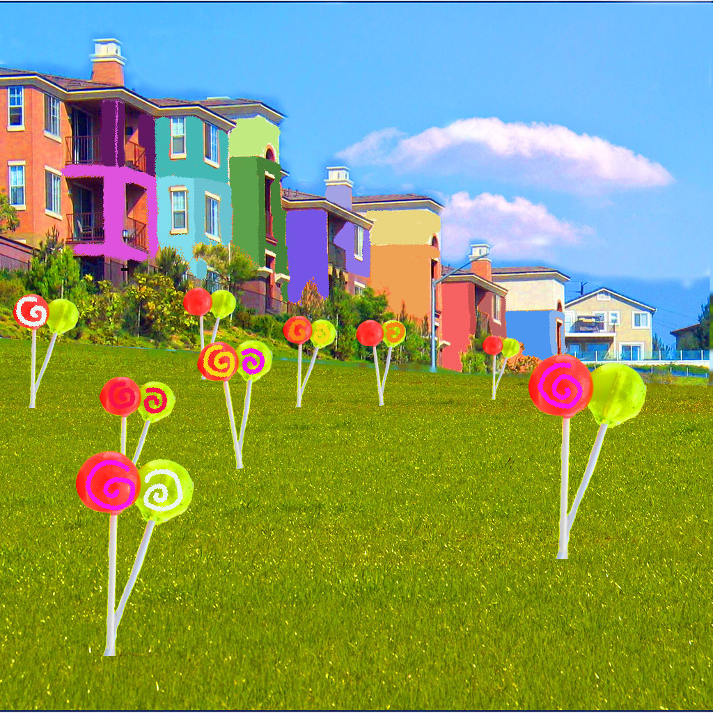

Susie/Cece orignates from a very diverse and colorful community even though she lives in a very strict household. Its always sunny and colorful where she lives, the sun always lights up her entire house. Her parents believe that she should follow the path that they've planned out for her. She hears about parties, festivals and events around her neighbourhood but her parents wouldn't allow her to go and she's never invited to anything because her parents portray her to be this 'too good for anyone' girl. She doesn't want to continue to follow this expectation that her parents have for her, she wants to have a choice.
 Go to Audio Work